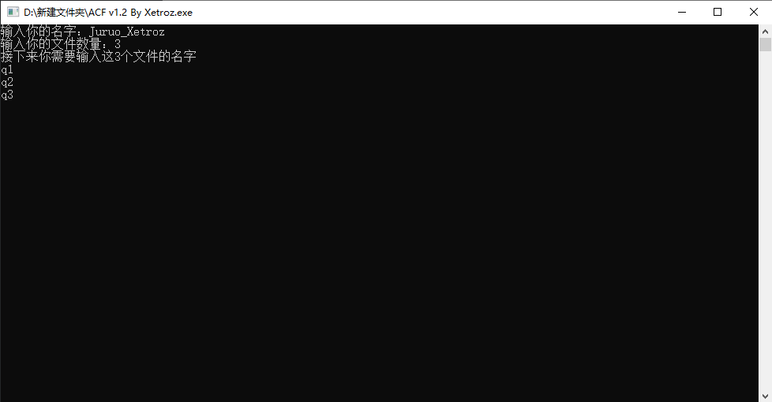
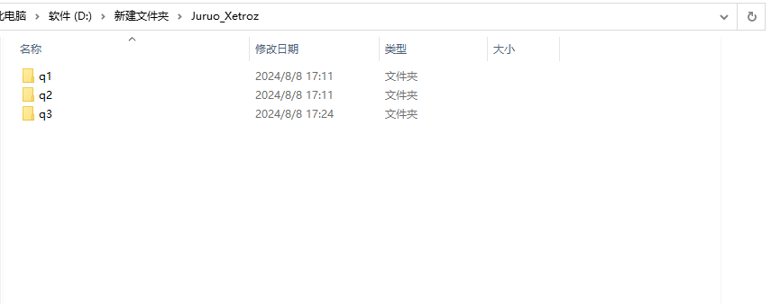
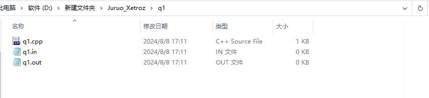
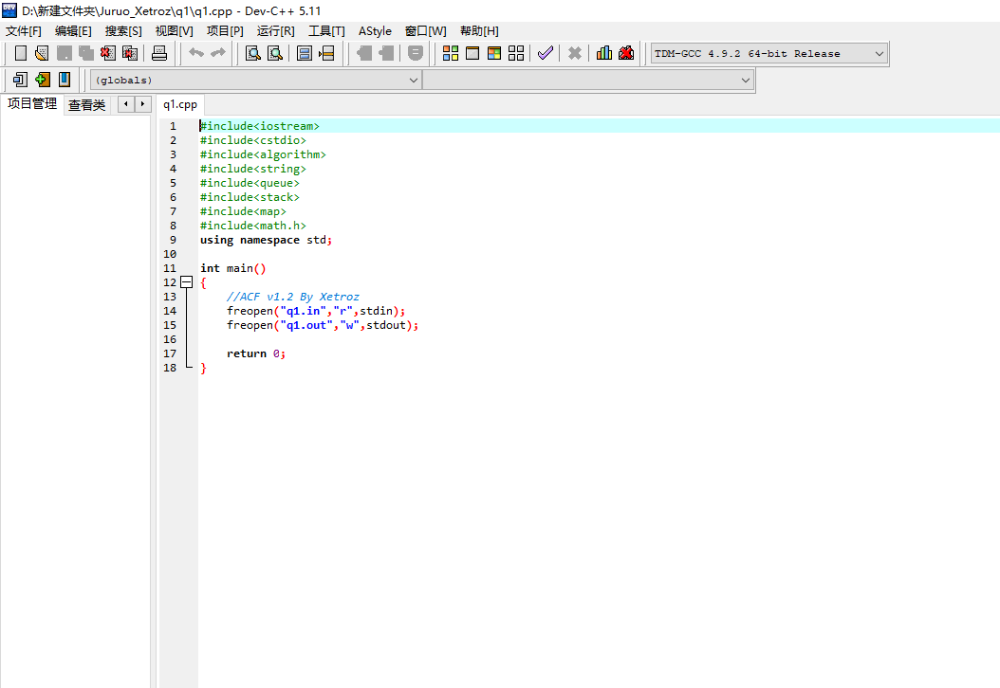

ACF：配套Cena使用的不二之选
ACF（AutoCreateFiles）由C++编写，运行该文件，程序将会创建一个以选手姓名（自行输入）为文件夹名的文件夹，之后会创建n个子目录（每个子目录的名字自行输入），每个目录包含.in/.out/.cpp文件，其中.cpp文件自动生成框架。
如，输入选手姓名为Juruo_Xetroz，一共3道题，分别是q1，q2，q3：
运行完过后，打开子目录Juruo_Xetroz，应该有3个文件夹，文件夹名分别为q1，q2，q3：
打开q1文件夹，有三个文件，分别为q1.cpp，q1.in，q1.out：
其中，q1.in和q1.out为空文件，q1.cpp如下图所示：
其余q2和q3与q1一致
下载链接：点我
ByeBye！